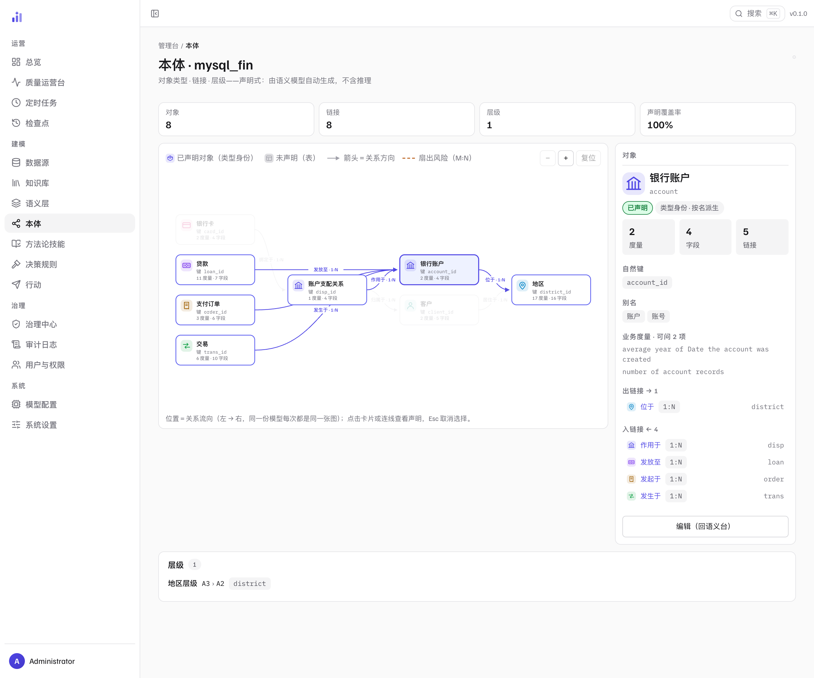

本体
数据能力的第二组。语义层管的是「这句话怎么编译成 SQL」，
本体管的是「这些表和列在业务里叫什么」——数据集是「贷款」这个对象，
两列相等是「属于」这条关系，维度字段串成「大区 › 省 › 市」这条链。
本体不是另一份模型：它就长在 semantics.yml 里，是语义模型的对象视角。
为什么要有对象层
表名的世界和业务的世界之间隔着三处具体的落差。每一处都不是「叫法不好听」， 而是缺了它，链路某一段就只能说物理的词——或者更糟，自己发明一个。
| 物理世界的说法 | 业务世界的说法 | 缺了它会怎样 |
|---|---|---|
loan 表 |
「贷款」这个对象，业务键是贷款号 | 答案卡表头只有 loan_id；提问说「借款」时检索不到这张表 |
customer_id = customer_id |
「这笔贷款属于某个客户」 | 关系只是一对列名，拒绝文案里说不出是哪两个对象之间缺一条链接 |
region / province / city |
「地区：大区 › 省 › 市」 | 下钻顺序取决于字段在模型里出现的偶然次序，而不是业务的粗细次序 |
本体的做法是把这三样声明进语义模型，然后在整个链路上按同一个词说话： 检索时当别名用、生成时写进提示、答案卡上做表头、拒绝文案里说人话、 分析时定下钻次序、判定与行动里带出对象身份。 一次声明，全链消费——所以它不会有第二份定义，也不会跟语义层漂移。
对象视角没有独立的持久化、没有独立的写路径。所有改动走语义模型既有的那条路：
草稿 → 校验 → 确认 → 写入 semantics.yml。
对象图页、拒绝文案里的「X → Y 链接」、分析的下钻选路，读的都是同一份声明。
这是「不飘」的机制保证：没有第二份真源，就没有两份真源对不上的那一天。
三块声明
全部写在语义模型里，位置是固定的一种（放错层会被拦，见下）。 下面用金融演示库的词汇写一份示例：
semantic_model:
- name: financial
datasets:
- name: loan
primary_key: [loan_id]
fields: [...]
entity: # ① 对象声明：这个数据集是什么业务对象
display_name: 贷款
natural_keys: [loan_id]
aliases: [借款, 贷款单]
- name: customer
primary_key: [customer_id]
fields: [...]
entity:
display_name: 客户
aliases: [用户]
relationships:
- name: loan_to_customer # ② 关系声明：这条边在业务里叫什么
from: loan
to: customer
from_columns: [customer_id]
to_columns: [customer_id]
cardinality: N:1
display_name: 属于
hierarchies: # ③ 层级声明：维度链，粗 → 细
- name: region_chain
display_name: 地区层级
dataset: district
levels: [region, province, city]models.py:165 SemanticEntity models.py:190 SemanticRelationship models.py:332 Hierarchy models.py:354 SemanticModel
① 对象声明 datasets[].entity
| 键 | 含义 | 没声明时 |
|---|---|---|
| display_name | 对象的业务名（「贷款」） | 读侧回退数据集名 |
| natural_keys | 自然键：业务上拿来指认一个对象的字段（如 loan_id） | 读侧回退 primary_key |
| aliases | 对象的别称（「借款」），供词法锚定消费 | 没有回退——没有就别称，不发明 |
三个键全空（写了个 entity: {}）与整个块缺席同义，
都归一成「未声明」——空声明不会在投影里变成一个空壳对象。
② 关系声明 relationships[].display_name
关系本身（from / to / 列对 / 基数）是语义层本来就有的，
join 路径与 fan-out 保护都靠它。本体给关系补的是业务名：
display_name: 属于。
models.py:226 display_name models.py:221 cardinality
关系的业务名不进 SQL、不改 join 语义；真正决定「这条边能不能走」的是
cardinality 与 fan_out——后者在编译期决定 M:N 边是拒绝还是去重。
把这两个搞混会得到一个很危险的印象：以为起个好名字就等于建模了。
③ 层级声明 hierarchies[]
| 键 | 含义 |
|---|---|
| name | 层级标识（草稿与 lint 按它寻址） |
| display_name | 展示名；没有文档化的回退——不发明，原样透出 |
| dataset | 层级归属的数据集，级别字段必须来自它 |
| levels | 字段名有序链，粗 → 细；至少两级才成为一条链 |
ossie.py:151 _entity_declaration lint.py:826 _lint_hierarchies
entity 只有一个合法位置：数据集子块下。
hierarchies 与 time_spine 同层，在 semantic_model[0] 下。
写在文档顶层会被解析器忽略——「看起来声明了、投影里却没有」是最难查的一类问题。
所以这条边界守两次：解析层出声（日志警告），写盘层拦下（lint 报错，附上该写到哪的完整路径）。
一次声明，全链消费
三块声明各自喂给不同的消费面。这张表是「声明一次」这句话的兑现清单—— 每一行都能在源码里指到具体的读点。
flowchart LR
E["① datasets[].entity
对象名 · 别名 · 自然键"]:::gen
R["② relationships[]
业务名（基数另管编译）"]:::gen
H["③ hierarchies[]
字段链：粗 → 细"]:::gen
P["对象图投影
纯函数 · 零 I/O"]:::entry
C1["表锚定与生成提示
别名 · 对象摘要行"]:::exec
C2["答案卡表头
列名 · 实体"]:::exec
C3["拒绝文案与一键起草"]:::gate
C4["分析次序 · 判定标签 · 行动身份"]:::ext
E --> P
R --> P
H --> P
E --> C1
E --> C2
R --> C3
H --> C4
classDef entry fill:#71717a14,stroke:#71717a59,stroke-width:1px;
classDef gen fill:#6366f114,stroke:#6366f199,stroke-width:1.5px;
classDef exec fill:#14b8a614,stroke:#14b8a699,stroke-width:1.5px;
classDef gate fill:#f59e0b14,stroke:#f59e0b99,stroke-width:1.5px;
classDef ext fill:transparent,stroke:#71717a80,stroke-width:1.5px,stroke-dasharray:4 4;
| 消费面 | 本体在这里做什么 | 读点 |
|---|---|---|
| 表锚定 | 别名并入既有的同义词子串通道（不新开一路），问题里出现「借款」也能锚定到 loan；未声明实体时打分与旧行为逐字节一致 |
schema_linking.py:91 _lexical_terms |
| 生成提示 | 已声明的数据集多一行确定性事实：Object: 贷款 (aliases: 借款; natural keys: loan_id)——计划书写对象语言时有可依的规范词，不必猜表名或发明键名 |
schema_linking.py:248 _object_summary_line |
| 答案卡表头 | 结果列能唯一精确匹配到某个已声明对象的字段时，表头变成「列名 · 实体」；匹配不唯一或没声明就不标（宁缺不猜） | object_columns.py:31 build_object_columns |
| 拒绝出口 | 关系类拒绝用对象的显示名说人话，并附「X → Y 链接」与一键起草修复的入口——补的正是关系声明本身 | refuse.py:270 _related_links |
| 分析 | 维度按层级排次序（粗维度先拆），下钻沿声明的链选下一级，行卡与载荷标签用显示名 | engine.py:129 _hierarchy_ranks engine.py:208 _ref_next_level |
| 判定 | 判定行卡带可选 dim_display——纯标注、零查询，判的仍是同一份数字 |
service.py:315 annotate_dim_display |
| 行动 | 提案创建时把「这次说的是哪个对象」冻结成对象引用（类型 + 自然键取值），之后验收读的是当时那一份 | propose.py:132 entity_ref |
这些消费面共用的还有同一份读侧回退：显示名缺省回退数据集名这件事只写在 一个函数里（ object_graph.py:43 entity_display_name）， 对象图页与答案卡表头调的是同一个它——同一份声明在任何地方给出的是同一个名字。 纪律是：声明层保持缺失即缺失，回退只发生在读侧。
对象图：投影 ≡ 声明
对象图是把语义模型映射成「对象 + 链接 + 层级」的一份只读投影， 由 object_graph.py:85 build_object_graph 产出：纯函数、零 I/O、零 LLM、同输入逐字节同输出，并且绝不抛异常。 它有三条由测试钉住的往返不变量：
| 不变量 | 含义 |
|---|---|
| 对象指回声明 | 图上每个对象都指回一个数据集声明；每条边都指回一条 relationship 声明 |
| 未声明的也在图上 | 没声明实体的数据集照样出现，标 declared: false、弱化为「表」节点——图不缺角，「声明覆盖率」才是一眼可见的缺口 |
| 派生值同源 | 边的「会不会放大行数」是布尔派生值，判定复用编译器的同一个函数——不会出现「图上看着安全、编译期被拒」 |
列表顺序 = 声明顺序（不排序、不去重——声明即输出，顺序是文档的一部分）； 空模型给的是三键恒在的空图，「投影为空」与「读不到」由调用方用错误形状区分， 投影自己不替调用方判 404。
管理台：只读，但三态诚实
/admin/ontology 是这份投影的图形界面。
它不建模、不编辑——页面上唯一的动作是深链回语义台去声明。
只读不是省事，是为了让「这里看到的」永远等于「模型里声明的」。
| 页面遇到的情况 | 渲染成什么 |
|---|---|
| 数据源还没有语义模型 | 引导卡 + 「去语义台声明」——不渲染一张空图 |
| 有对象、但一个都没声明 | 图照常渲染（全是灰色「表」节点）+ 弱化的引导卡——「没声明」不是「没数据」，这不是空态 |
| 读不到，或响应形状不对 | 显式错误卡 + 重试——绝不把读失败渲染成一张空的图 |
页面顶部四块 KPI：对象数 / 链接数 / 层级数 / 声明覆盖率（声明了实体的对象占比）。 图本身是确定性的：位置由关系流向决定，同一份语义模型在任何一次渲染里都是同一张图； 只放大缩小（1×–3×）、不平移，节点键盘可达，指向未声明数据集的悬空链接明确提示而不是静默丢掉。 对象数超过 60 时给一条规模提示。

1 2 3 4mysql_fin）：三块声明在同一屏——对象、链接、层级，加一行 KPI 把「声明了多少」说成数。- 1四块 KPI——对象 / 链接 / 层级 / 声明覆盖率（声明了实体的对象占比，图里这个源是 100%）。覆盖率不是打分，是缺口提示：没声明的数据集照样出现在图上（灰色「表」节点），缺口一眼可见而不是被藏起来。
- 2对象图——节点用实体显示名，边用关系声明的业务名 + 基数（贷款「发放至」银行账户 1:N）。位置由关系流向决定（左 → 右），同一份语义模型每次渲染都是同一张图；灰色虚线节点是尚未声明实体的数据集。
- 3详情栏——选中对象后是它的声明原文：自然键
account_id、别名「账户 / 账号」（这两个别名就是表锚定里会被认的词）、业务度量与出入链接。页面唯一的动作是「编辑（回语义台）」深链——本体页不建模、不编辑。 - 4层级卡——第三块声明：地区层级
A3 · A2（粗 → 细，级别按声明序）。分析引擎的下钻读的就是这条链：候选维度按层级序重排、钻下一级取同链的细一级；没声明链的维度不会被硬凑成上下级。
OntologyView.vue:54 coverageText OntologyGraph.vue:58 ZOOM_MAX semantic.py:196 semantic_object_graph
声明从哪来
三条路，出口全在同一个门槛上：改动一律先落 pending 草稿，确认才写入。
| 来源 | 产出什么 | 边界 |
|---|---|---|
| 管理端手写 | 数据集详情里的实体声明表单（显示名 / 自然键 / 别名）与「新增关系」对话框；保存前先校验，通过才建草稿 | 空字段不写进 payload——缺席就是没声明 |
/kb init 起草 |
从 schema 注释的标题词与表级计数词起草 display_name / aliases，自然键取模型主键 |
全状态幂等（管理员拒绝过的不回灌）；三个键全空的草稿根本不会产生；起草的显示名必须含中文且不同于表名——英文散文的首词是坏名字，宁可不给 |
| 软 MISS 候选 | 提问因字段/枚举缺口走骨架路径时，顺带起草一条实体声明候选，进待审队列 | 只从缺口形状发射，单轮上限 3 条 |
init_pipeline.py:368 _draft_entity_naming candidates.py:215 _entity_spec manage.py:1129 create_draft
确认时的写路径与语义层其他改动完全同一条：先跑一次「应用后的文档」lint， 有阻断级问题就拒绝写盘（ issues.py:280 blocking_issues）， 通过才写入并留一次 git 提交。本体声明的 lint 是分级的：
| 级别 | 包含 | 后果 |
|---|---|---|
| error（拦写盘） | 实体块形状坏掉；自然键引用了本数据集没声明的字段；别名形状坏掉；层级字段不在归属数据集里；层级重名 / 未声明数据集 | 声明本身不成立，确认会被拒 |
| advisory（只提示） | 声明了实体但没有可用的自然键；别名与别处重复；层级只有一级 / 级别重复 / 覆盖有缺口 | 照常出现、照常可确认——它们是「可以更好」，不是「不成立」 |
issues.py:253 _ADVISORY_CODES lint.py:723 _lint_entities
还有一类草稿值得单独说：撞上已声明实体或重名关系的改动。 它照常落到待审队列（覆盖是正当的修正路径），但不能直接确认—— 确认按钮前置禁用，管理端以它为蓝本预填「新建」。 草稿是用来审的材料，不是用来一键覆盖现有声明的开关。
声明怎么被验证
写盘前的 lint 证的是声明自洽——自然键引用的字段在这份模型里存在、层级不重名； 证不了声明为真——自然键在库里到底重不重复、标着 1:N 的边「一」侧到底唯不唯一， 这两件事只有连上库才知道。而它们恰恰是准确性杠杆的承重墙：键锚定与骨架保真保的是 「自然键唯一」这个前提，fan-out 拦截读的正是基数声明。声明一旦不成立，守卫不会报错—— 它只会安静地朝反方向使劲：该拦行倍增的地方，自己变成行倍增。
所以 trove validate --live 带了第三族检查：对库探测——
每条声明翻成一条只读 COUNT，零 LLM、纯确定性。裁决是四态闭集，没有一态叫「静默通过」：
| 裁决 | 含义 | 报告面 |
|---|---|---|
verified |
声明在今天的库上成立（消息里带计数） | 只进计数（decl_verified），不出条目 |
violated |
声明为假 | 硬错误，退出码 1（与 kb.enums 同款：声明与库不一致） |
advisory |
成立，但数据里有值得看一眼的东西（键含 NULL、没有可折叠的重复行） | warning |
unverifiable |
探测跑不了（表不在、方言不支持）——判不了 ≠ 通过 | warning，绝不折算成 verified |
三类探测各自证什么：
- 键唯一——实体自然键（未声明实体则退回主键）：非空键行去重后变少就是违例。这是键锚定与骨架保真的前提被对库核实；
- 关系基数——many→one 的全部含义就是「to 侧唯一」；1:1 加验 from 侧；M:N 不主张唯一（编译器本就不许直接连），它唯一可证伪的面是豁免；
- fan_out 前提——
dedup豁免只在「重复是整行精确重复」时成立：DISTINCT *折叠后每键仍多于一行即违例（同键不同行，去重去不掉，豁免看着放行、行倍增照旧）；库上根本没有重复行只是 advisory——豁免没在做事。
两个细节是承重的。其一，NULL 语义：SQL 唯一语义对 NULL 不去重，
混口径的计数（COUNT(*) 含 NULL、COUNT(DISTINCT …) 排除 NULL）
会把两行 NULL 键读成「重复键违例」——探测在非空行上判唯一，NULL 单列成 advisory，不制造假警报。
其二，只探测声明过的东西：未声明的键与边没有可证伪的声明，它们进同一份报告的
覆盖率节——哪些数据集没实体、哪些对象没键、哪几个数据集之间一条边都没有——
advisory、零查询；覆盖率是进度指标，不是可用性开关。
这一族只在 --live 下存在：不带 --live 既不连库、输出也逐字节不变。
方言不支持反引号引用标识符时（如 Postgres）给一条诚实的「跳过」，而不是逐条报 SQL 错刷屏——
与 kb.columns 的 MySQL-only 闸同款。
verify.py:91 verify_declarations verify.py:239 _probe_dedup verify.py:282 _coverage service.py:336 _live_semantic_checks
诚实边界
| 边界 | 说明 |
|---|---|
| 业务名不进 SQL | 对象显示名、关系显示名、层级显示名全是展示字段：不改 join 语义、不改口径、不改编译判定。层级也不进编译器——它服务分析的次序与标签 |
| 未声明 ≠ 不能用 | 对象声明是可选的增强：没有它，问题照答，只是全链说表的词。覆盖率因此是进度指标，不是可用性开关。但关系声明不是可选项——join 路径与 fan-out 保护本来就依赖它 |
| 冲突草稿的落库面 | 拒绝卡上的实体/关系冲突目前只在文案里说明，不落进待审收件箱（自动落库那一路只覆盖指标与字段）；需要建的时候走管理端表单或草稿 API |
| 层级的创作面 | 管理台前端还没有层级的编辑表单；层级声明走通用草稿 API 或直接手写 YAML。写错照样会被 lint 拦在写盘前 |
| 图上不编数据 | 对象图不编实例数据、不编基数、不编名字：图上没有的东西就是没声明的东西 |
| 验证是快照，不是承诺 | 对库探测证的是今天这份数据：自然键唯一、基数成立，都是探测那一刻为真。数据演进之后可能不再成立，重跑 trove validate --live 才知道。验证只报不改——违例不会被自动修正，也不阻断查询（它报告的是前提，不是运行时开关）；fan_out: bridge:* 这类保留豁免还会被标成不生效的死配置 |